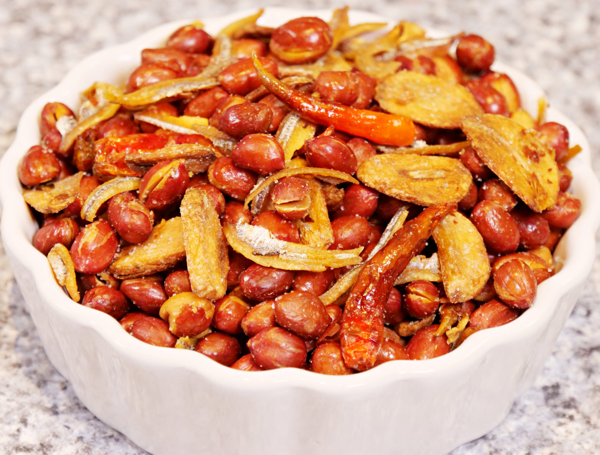

<-- Back to Home
Salted Peanuts with Garlic
Adobong Mani

Adobong mani is a popular Filipino snack that consists of fried peanuts with garlic.
It is easy to make and very addictive. You can enjoy it as an appetizer, a side dish, or a munchie.
Here is how to make adobong mani at home.
Ingredients
- 500 grams of raw shelled peanuts (with or without skin)
- 1/4 cup of vegetable oil
- 1/4 cup of peeled garlic cloves, sliced thinly
- Salt to taste
Procedure
- Heat oil in a large skillet over medium-high heat.
Add garlic and fry until golden and crisp, stirring occasionally.
Transfer to a paper towel-lined plate and set aside.
- In the same oil, fry peanuts for about 15 minutes, stirring frequently, until
golden and crunchy. Drain excess oil and transfer to a large bowl.
- Sprinkle salt over the peanuts and toss well to coat evenly. Add the fried garlic and toss again.
- Serve hot or at room temperature. Store leftovers in an airtight container for up to a week.
Tips
- You can add some red chili flakes or cayenne pepper if you like your adobong mani spicy.
- You can also use roasted peanuts instead of raw ones, but reduce the frying time to avoid burning them.
- You can use a deep-fryer or an air-fryer instead of a skillet if you prefer.
- You can also make adobong mani with other nuts such as cashews, almonds, or pistachios.
Enjoy your adobong mani with a cold drink or a hot cup of coffee. It is a perfect snack for any occasion. Try it today and let me know what you think!